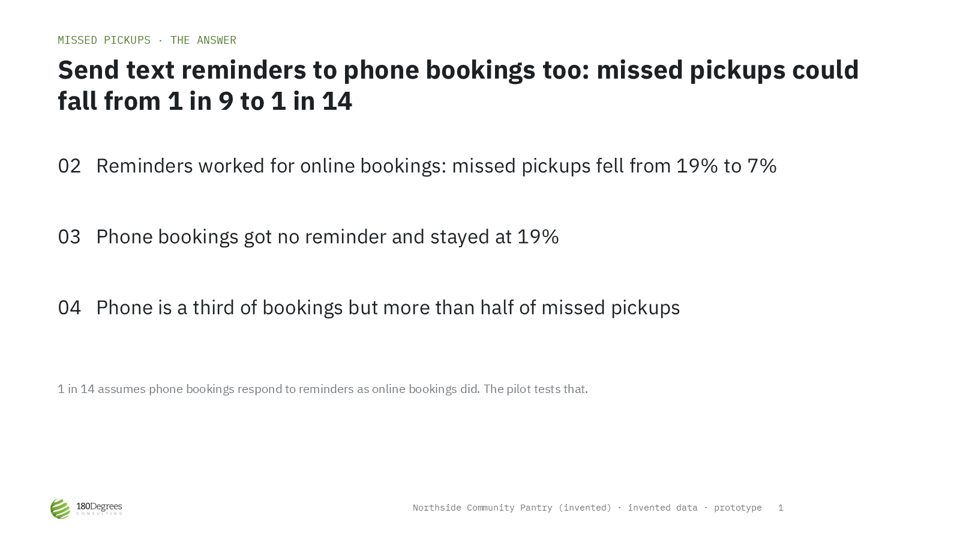
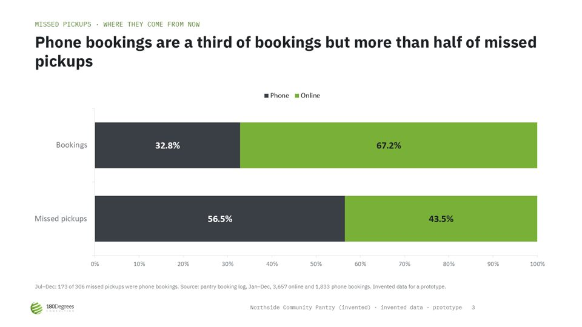
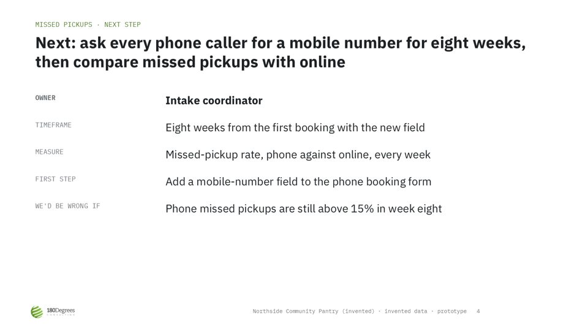
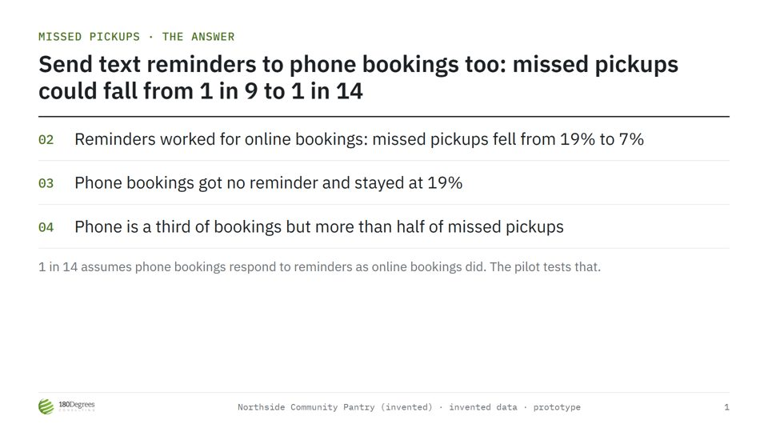
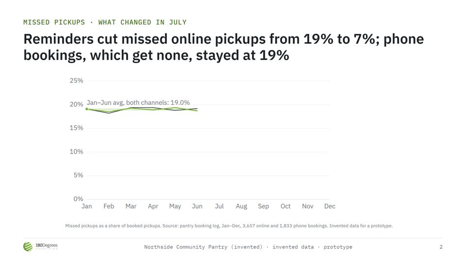
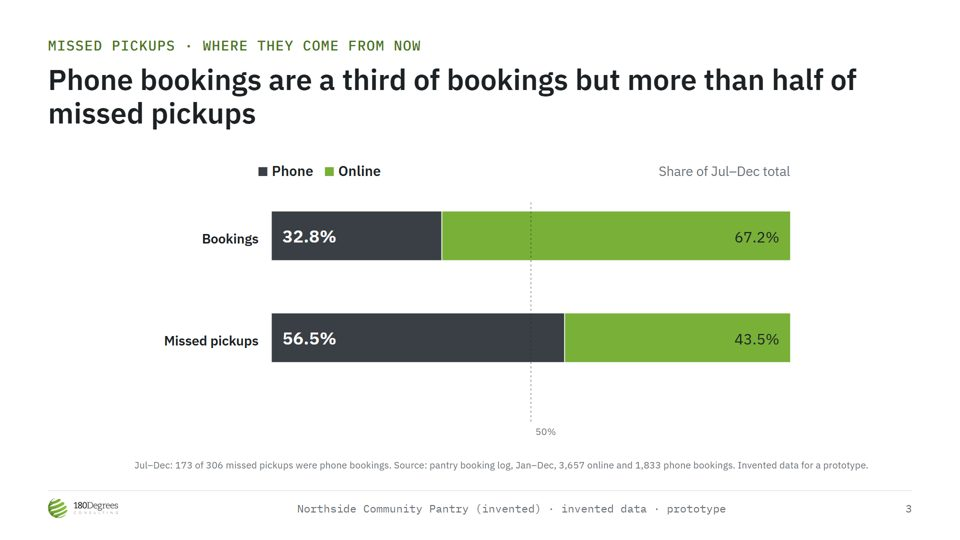
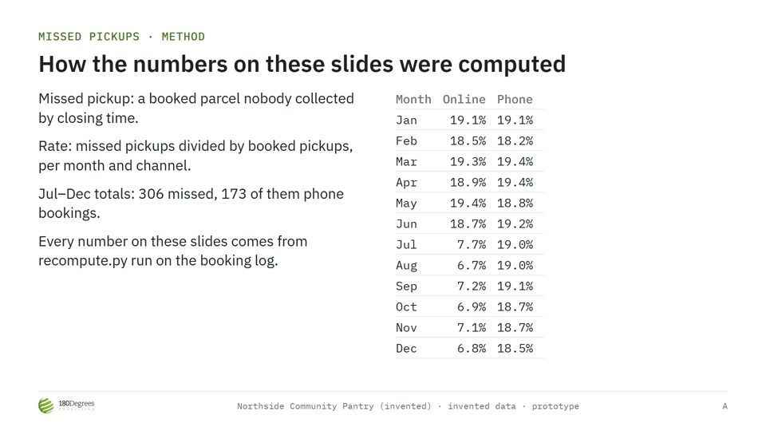

180dc-visuals · ticket 24 · prototype · invented data, no client material
One dataset, the consultant's own words, four ways to present it
Every number comes from recompute.py on one invented booking log. Every title and line comes from one file standing in for the consultant (content/consultant.json). Only the format changes across the four columns.
1 · Chart + title checkopen
- Runs on
- Free HTML artifact plus a stdlib Python script (scripts ran on Free in the 17 Oct test)
- Leaves with
- A checked title and a chart image with its source line, to paste into any deck
- Good at
- The skill's real job: three rounds caught a label title, then an overclaim (63% online sold as 63% overall)
- Weak at
- The image isn't editable in the team's deck
- Runs on
- Free One HTML artifact, no script needed
- Leaves with
- 4 slides: arrow keys, notes (N), full screen (F), PDF via print
- Good at
- Looks the same on any screen; one file; keeps the chart's annotations
- Weak at
- Lives outside the team's PowerPoint or Slides deck; notes show on the same screen as the slide; nobody else can edit it



- Runs on
- Free, unverified Built here with python-pptx 1.0.2; whether claude.ai's sandbox has it on Free is untested
- Leaves with
- A .pptx with native charts and speaker notes; imports into Google Slides
- Good at
- Lands in the deck the team is already building; anyone can restyle the chart
- Weak at
- Native charts lose the annotations: the July line and the average bands moved to a caption. Plain PowerPoint look; fonts fall back if not installed
4 · HyperFrames slideshowsource




- Runs on
- Claude Code only Needs Node, the HyperFrames CLI and a local
present server
- Leaves with
- A project folder; presenter tab with notes plus a separate audience tab; step-by-step reveals; a "How we computed this" branch for questions
- Good at
- A live pitch that builds the argument one step at a time
- Weak at
- No route from claude.ai. Getting it to run took four fixes (scene timing, timeline registry, restart on edit, duplicate hotspot), so it's fragile for a consultant. No PDF or .pptx out
What the prototype showed
- The check is the product, not the format. The round-2 title ("cut missed pickups by 63%") is what plain AI writes: it's a real so-what with the wrong base. Only recomputing from the data caught it. That check works the same in all four formats.
- Hand-typed numbers drift. While building this I typed a booking total into the source line by hand (3,690); the data says 3,657. Moving it into the recompute step fixed it. The skill needs the same rule: no number on a slide that the script didn't print.
- Format follows where the deck lives. A consultant's deck is a team PowerPoint or Slides file. Columns 1 and 3 land there; columns 2 and 4 sit beside it.
- Projector type matters. The chart's labels were fine pasted on a laptop slide and too small at 1920×1080 (HyperFrames flagged it). They're now 30 px in every format.